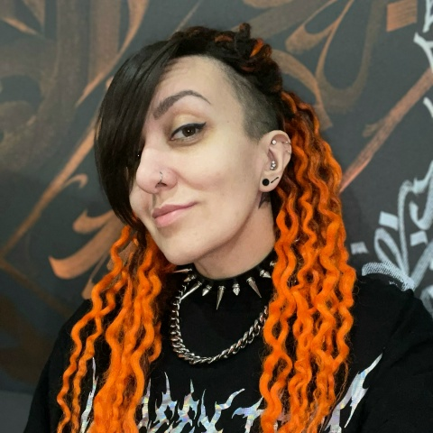
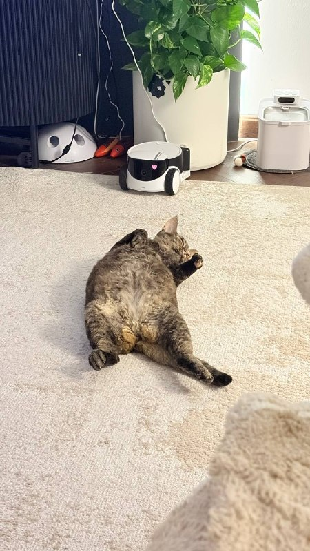

20M+
загрузок портфеля
По данным официального сайта студии на 30 октября 2026 года. [2 · 2026]
Люди за Multicast Games
Семья. Игры.
Своя история.
За играми, в которые играют миллионы, стоят конкретные люди. В этой истории — супруги, которые основали Multicast Games и вместе создают игры. [3 · 2022]
От первых проектов к своей студии20M+
По данным официального сайта студии на 30 октября 2026 года. [2 · 2026]
≈$3M
Сумма продажи Zombie City Master в мае 2022 года — по словам Инны в интервью. [3 · 2022]
200%
Результат продвижения игры из кейса AppMetrica, опубликованного в 2023 году. [4 · 2023]
топ-3
Alien Invasion — в тройке игр по кейсу CrazyLabs со ссылкой на data.ai State of Mobile 2024. Отраслевое признание игры. [5 · 2024]
01 / Двое
Семейная команда складывается из двух самостоятельных профессиональных историй.
Компания
и привлечение игроков
Сооснователь Multicast Games. В кейсе Persona.ly от 25 мая 2023 года — CEO и Head of UA: руководит компанией и направлением привлечения игроков. [6 · 2023]
Ранее работал PM в Kefir — этот опыт упоминается в интервью Инны. [3 · 2022]
Профессиональный профиль 3D-портфолио ↗
Производство
и развитие игр
Соосновательница Multicast Games и продюсер Zombie City Master. В интервью AppTractor от 22 мая 2024 года представлена как COO. [1 · 2024]
В 2016 году перешла в тестирование. Работала в Sperasoft над PlayStation Store, в Game Insight и Thematica; позже стала PM, затем продюсером. [3 · 2022]
Приглашённый спикер геймдев-интенсива 2023 года: развитие продукта, маркетинг и монетизация. [11 · 2023]
Профессиональный профильДолжности приведены на даты публикаций. Источники портретов.
02 / История
Первые проекты, мобильные эксперименты, собственная студия и игры с миллионной аудиторией.
7 декабря на GameDev.ru появилась тема Red Rage. В интервью Инна также вспоминает Operation JuggerFall как один из первых совместных проектов. [7 · 2014] [3 · 2022]
По рассказу Инны, мобильная команда начинала впятером. Первым хитом стал Fish Idle. [1 · 2024]
В профиле Multicast Games указан 2021 год. Это дата компании, а не начало совместной работы. [8]
В мае игру продали Tilting Point. Позже Инна рассказала о сделке в интервью; озвученная сумма — около $3 млн. [3 · 2022] [9 · 2022]
Persona.ly и AppMetrica публикуют результаты работы с игрой: монетизация, привлечение игроков и аналитика становятся отдельной частью истории студии. [6 · 2023] [4 · 2023]
В интервью Инна рассказывает: Alien Invasion выросла из эксперимента с визуалом Fish Idle и была продана CrazyLabs. На дату интервью в студии — 25 сотрудников. [1 · 2024]
Официальный сайт сообщает о 20M+ загрузок портфеля. В нём — Alien Invasion, Fish Idle, Butcher Hero и другие игры. [2 · 2026]
03 / Игры
Несколько проектов из портфеля Multicast Games. Цифры загрузок — данные студии для Android, проверены 30 октября 2026 года. [2]

10M+ загрузок / Android
Эксперимент с визуалом Fish Idle стал самостоятельной игрой и большим проектом студии. [1 · 2024]
Рост показателя для Android в США в кейсе Persona.ly 2023 года. К третьему месяцу конверсия в первую покупку выросла в 1,8 раза. Результаты конкретного кейса. [6]

5M+ загрузок / Android
Первый хит мобильной команды, по рассказу Инны. Отправная точка для следующего эксперимента — Alien Invasion. [1 · 2024]
Fish Idle 2 — страница в SteamПродюсер — Инна Кривсунова
Проект, который стал важной частью профессиональной истории Инны и совместной команды. В 2022 году его приобрела Tilting Point. [3 · 2022]
Интервью об истории игрыИконки Alien Invasion и Fish Idle — из карточек игр в Google Play. Буква Z — декоративная типографика, не официальный арт игры.
04 / По-домашнему
У семейной истории есть ещё три имени.


Пупа, Лупа и Никс — три кота семьи Кривсуновых. [10]
Послесловие / О достоверности
Этот сайт собран по открытым публикациям и подтверждённым семейным сведениям. Цифры относятся к указанным датам. Личные премии и почётные звания не указаны: в проверенных источниках их подтверждение не найдено.
Интервью COO Инны: начало мобильной команды, Fish Idle, Alien Invasion и состав студии на дату беседы.
Читать интервью ↗Официальный портфель, 20M+ загрузок и показатели Android-игр. Данные самой студии, не независимый аудит.
Официальный сайт ↗Пересказ интервью Инны о карьере, ранних проектах и продаже Zombie City Master. Около $3 млн — сумма со слов Инны.
Читать пересказ ↗Кейс Alien Invasion: аналитика и ROAS 200%. ROAS показывает соотношение дохода и рекламных расходов, а не чистую прибыль.
Читать кейс ↗Кейс Alien Invasion со ссылкой на data.ai State of Mobile 2024: игра в тройке hybrid-casual. Это признание проекта, не личная награда основателей.
Читать кейс ↗Вячеслав — CEO и Head of UA. Кейс Android в США: рост D30 ROAS на 40%, конверсии в первую покупку — в 1,8 раза к третьему месяцу.
Читать кейс ↗Публичная тема Red Rage — ранний след совместных проектов. Её дата не означает дату регистрации компании.
Открыть тему ↗2021 — указанный год основания компании. Личные профессиональные профили приведены в разделе «Двое».
Профиль компании ↗Беседа с Инной о Zombie City Master, профессии и работе над играми.
Смотреть на YouTube ↗Страница выпуска ↗Имена котов: Пупа, Лупа и Никс. Имена подтверждены Вячеславом. Фотографии из семейного архива найдены по подписям и обсуждениям в Telegram. Личная переписка не публикуется.
Анонс Инны как приглашённого спикера интенсива: продукт, привлечение аудитории, креативы и монетизация.
Анонс выступления ↗Портрет Вячеслава — из кейса Persona.ly; портрет Инны — из её профиля VK. Фотографии котов — из семейного архива.
Профиль Инны ↗Портрет Вячеслава в кейсе ↗Дата исследования: . Статус игр в Steam проверен на эту дату.